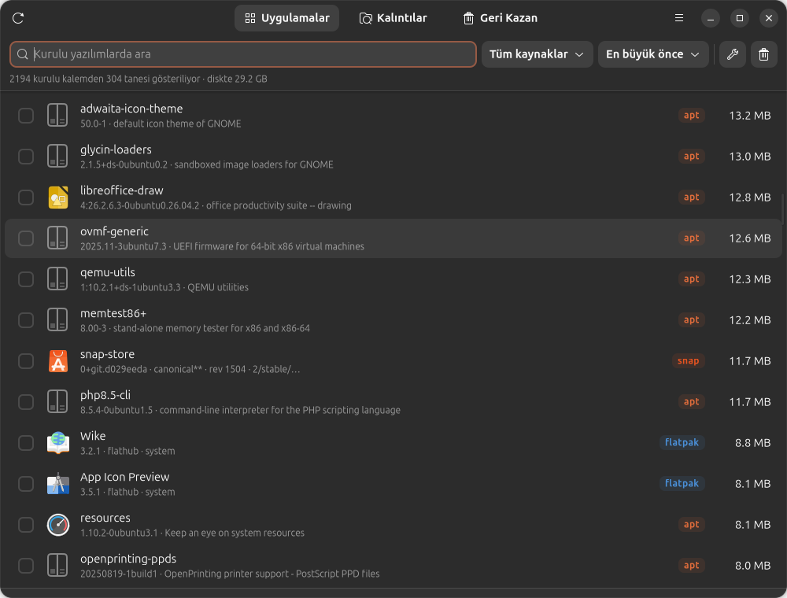

Linux'ta yazılım kurmanın her yolu için tek kaldırma aracı
- apt
- dnf
- pacman
- Flatpak
- Snap
- AppImage
- pip
- pipx
- npm
- cargo
Debian · Fedora · kaynak arşivi — GPL-3.0, sürüm 0.1.1

Tek liste
Kurulu olan her şey, hangi paket yöneticisi koymuş olursa olsun
Bir Linux makinesi yazılımlarını aynı anda bir düzine yerde tutar ve her biri başka bir komuta yanıt verir. AppSweep hepsine sorar ve yanıtları, boyuta göre sıralayabileceğiniz tek bir listede toplar.
kaynak, tek pencere
Sistem için apt, dnf ve pacman; taşınabilirler için Flatpak, Snap ve AppImage; başka hiçbir şeyin takip etmediği dil yöneticileri için pip, pipx, npm ve cargo.
tahmin değil, ölçüm
Her satır diskte gerçekten kapladığı alanı taşır; böylece artık kullanmadığınız en büyük şey ilk gördüğünüz şey olur.
kendi logosuyla
Logolar sistemde zaten bulunan masaüstü girdilerinden gelir; belirsiz bir eşleşme tahmin edilmek yerine atılır — yanlış bir logo, yanlış şeyi kaldırmaya davet eder.
Bir uygulamayı kaldırırsınız… …ama geride bıraktığı şey budur. AppSweep onu bulur ve temizler.
Kalıntılar
Program gider. Ayarları, önbellekleri ve verisi kalır.
Hiçbir paket yöneticisi bunları temizlemez; yıllardır kullanılan bir makinenin, çoktan kaldırılmış yazılımlara ait klasörler taşımasının sebebi budur. AppSweep, hiçbir kurulu uygulamanın sahiplenmediği klasörleri listeler, her biri için ne kadar emin olduğunu söyler ve onayladıklarınızı çöp kutusuna gönderir.
Dosya sildiği için
Asıl özen, hiçbir şey yapmadığı yerlerde
-
Hiçbir şey onaysız çalışmaz
Çalışacak komutlar, bir şey olmadan önce görünür.
-
Korunan yollar koşulsuz reddedilir
Var olsunlar ya da olmasınlar. Belge klasörleriniz user-dirs.dirs dosyasından okunur, yani dilinizin verdiği adla korunurlar.
-
Tahmin, tahmin olarak etiketlenir
Eşleşmeler kesin, olası ya da tahmin diye işaretlenir; tahmin olanlar asla önceden seçili gelmez.
-
Hâlâ kurulu yazılım kendi klasörünü korur
Bir programı kaldırmak, başka birinin ayarlarını asla götürmez.
-
Kalıntılar çöp kutusuna gider
/dev/null'a değil. Kalıcı silme ayrı bir seçimdir.
Kurulum
AppSweep 0.1.1 sürümünü edinin
Python 3.10+, GTK 4.10+ ve libadwaita 1.4+ gerekir. Arşiv ~/.local altına kurar, kök yetkisi istemez. Her sürümde SHA256SUMS bulunur.